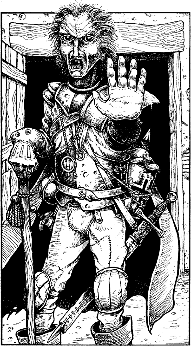

280
It is late afternoon when you ride into Stia, a village comprising a score of cottages and a dilapidated hut which sits astride the Great North Road. As you approach the tiny thatched hut its stable door swings open and an old man steps out of the shadows. He is wearing an odd assortment of antique armour and regalia that clanks and rattles like a cart-load of rusty metal as he shuffles across your path.

‘Hold there, strangers!’ he blusters, his croaky voice full of self-importance. ‘Proceed no further till you pay the toll.’ You draw your horse to a halt and stare down at the ridiculous-looking figure.
‘By what authority do you levy a toll on the Queen’s highway?’ asks Paido, irritated by the delay. ‘By the authority of the Queen herself,’ retorts the old man, indignantly, pointing with crooked finger to a placard on the wall of his hut. It bears the faded seal of Queen Evaine, but the board is so weathered that the words above it are illegible.
‘We travel to Tharro on royal business,’ you say, showing the Pass given to you by Lord Adamas. ‘Stand aside and let us proceed.’ The old man snatches the Pass from your hand and scrutinizes it, though it is obvious that his eyesight is so poor that he cannot read the contents.
‘Bah!’ he snorts, thrusting the Pass back into your hand. ‘It’s a forgery! You’ll not fool me with that worthless scrap o’ vellum!’
‘And we’ll not be taken in by a greedy old fool whose wits are as rusty as the armour he wears!’ shouts Paido angrily. As his words echo along the street a dozen villagers, armed with an assortment of farming tools, come to investigate the commotion. They form up in a line behind the old man, ready to enforce his demand.
‘What is the toll?’ you ask.
‘Only a trinket you may have that takes our fancy; that is all. One item apiece and you can continue on your way,’ replies the old man, smugly. ‘But let it not be said that we are without wit,’ he snaps, glaring at Paido. ‘We Stians pride ourselves on our sense of fair play and our love of riddles, therefore I shall make you an offer that satisfies us both. Answer me one riddle correctly and you can pass through our village without paying the toll. Answer wrongly, or give no answer at all, and you must pay the toll without question. Is it agreed?’
If you wish to agree to the old man’s terms, turn to 112.
If you refuse to agree, turn to 149.